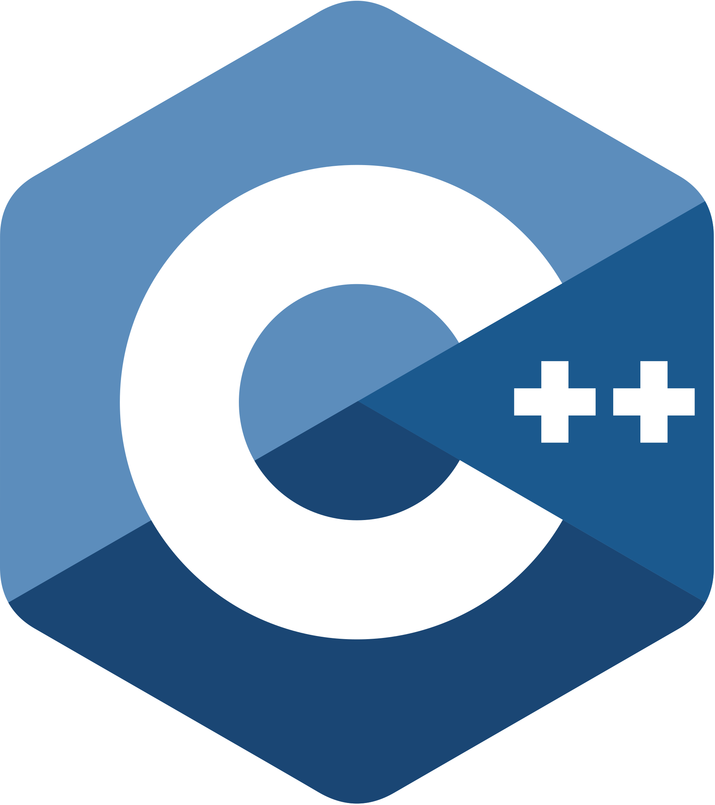

Languages & web technologies
 Java
Java Python
Python
C++ HTML
HTML CSS
CSS JavaScript
JavaScriptPHP
Tools & focus areas
A selection of the languages, technologies, and methods I’ve used across software engineering and research.
JavaPython
C++HTMLCSSJavaScript GitHub
GitHub